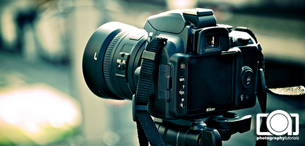
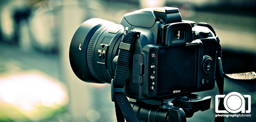

advertisement here
Kamera DSLR

Digital Single Lens Reflex (Digital SLR atau DSLR) adalah kamera digital yang menggunakan sistem cermin otomatis dan pentaprisma atau pentamirror untuk meneruskan cahaya dari lensa menuju ke viewfinder.

Digital Single Lens Reflex (Digital SLR atau DSLR) adalah kamera digital yang menggunakan sistem cermin otomatis dan pentaprisma atau pentamirror untuk meneruskan cahaya dari lensa menuju ke viewfinder.
| Source: id.wikipedia.org/wiki/DSLR |
|
|


 Copyright © Photography Tutorials. |